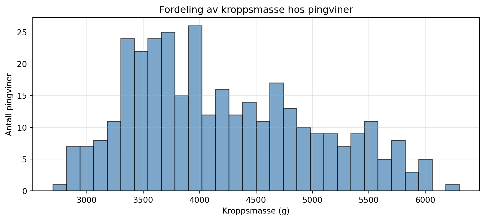
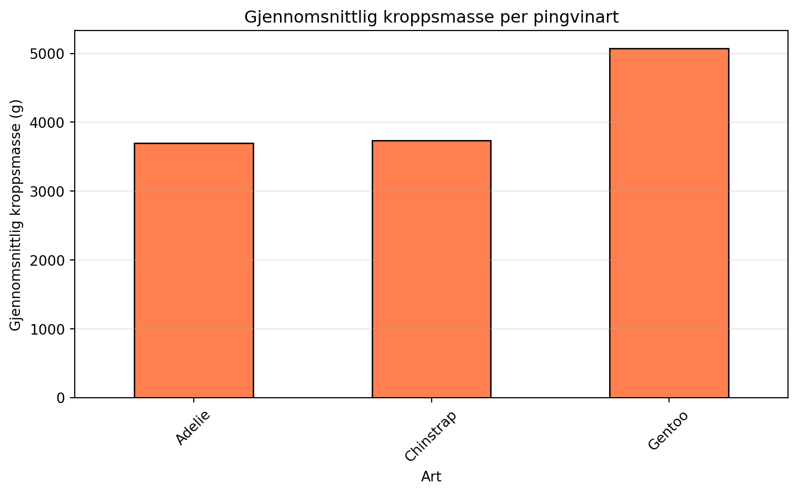
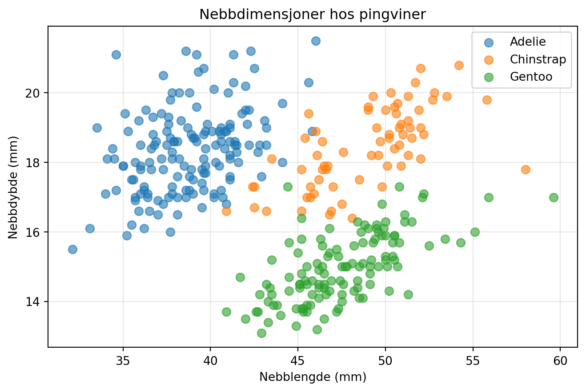
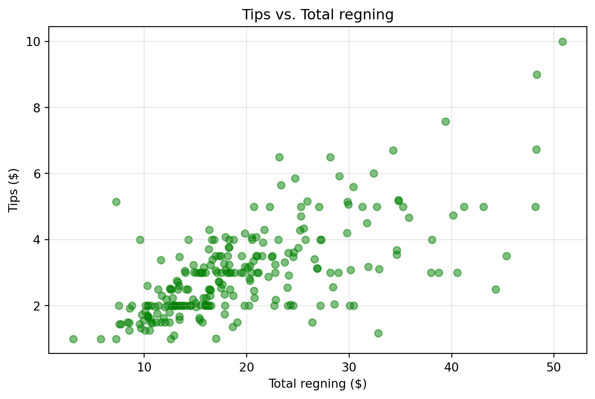

import pandas as pd
import numpy as np
import matplotlib.pyplot as pltIntroduksjon til Pandas
LLM-skrevet supplement til HON2200
Dette notatet er skrevet av en LLM som supplement til forelesningsmateriell i HON2200.
Læringsmål
Etter å ha jobbet gjennom dette notatet skal du kunne:
- Forstå hva en DataFrame er
- Lese inn data fra CSV-filer og pandas’ innebygde datasett
- Velge ut rader og kolonner fra en DataFrame
- Bruke
groupbyfor å aggregere data - Visualisere data med matplotlib
Hva er Pandas?
Pandas er et Python-bibliotek for databehandling og analyse. Navnet kommer fra “Panel Data” - et begrep fra økonometri. De to viktigste datastrukturene i Pandas er:
- Series: En endimensjonal array med labels (som en kolonne)
- DataFrame: En todimensjonal tabell med rader og kolonner
Importere Pandas
Vi starter alltid med å importere pandas. Konvensjonen er å kalle det pd:
Lage en DataFrame fra scratch
La oss lage en enkel DataFrame med noen data:
# Lage en DataFrame fra en dictionary
data = {
'navn': ['Anna', 'Bjørn', 'Cecilie', 'David'],
'alder': [25, 32, 28, 45],
'by': ['Oslo', 'Bergen', 'Oslo', 'Trondheim']
}
df = pd.DataFrame(data)
df| navn | alder | by | |
|---|---|---|---|
| 0 | Anna | 25 | Oslo |
| 1 | Bjørn | 32 | Bergen |
| 2 | Cecilie | 28 | Oslo |
| 3 | David | 45 | Trondheim |
Lese data fra innebygde datasett
Pandas kommer med noen innebygde datasett som er perfekte for øving. Vi kan også laste data direkte fra nettet.
Eksempel 1: Iris-datasettet
Iris-datasettet inneholder målinger av 150 iris-blomster fra tre forskjellige arter.
# Laste Iris-datasettet direkte fra UCI Machine Learning Repository
url = "https://archive.ics.uci.edu/ml/machine-learning-databases/iris/iris.data"
column_names = ['sepal_length', 'sepal_width', 'petal_length', 'petal_width', 'species']
df_iris = pd.read_csv(url, names=column_names)
df_iris.head()| sepal_length | sepal_width | petal_length | petal_width | species | |
|---|---|---|---|---|---|
| 0 | 5.1 | 3.5 | 1.4 | 0.2 | Iris-setosa |
| 1 | 4.9 | 3.0 | 1.4 | 0.2 | Iris-setosa |
| 2 | 4.7 | 3.2 | 1.3 | 0.2 | Iris-setosa |
| 3 | 4.6 | 3.1 | 1.5 | 0.2 | Iris-setosa |
| 4 | 5.0 | 3.6 | 1.4 | 0.2 | Iris-setosa |
Eksempel 2: Penguins-datasettet
Penguins-datasettet inneholder målinger av pingviner fra tre arter i Antarktis.
# Laste penguins-datasettet
url_penguins = "https://raw.githubusercontent.com/mwaskom/seaborn-data/master/penguins.csv"
df_penguins = pd.read_csv(url_penguins)
df_penguins.head()| species | island | bill_length_mm | bill_depth_mm | flipper_length_mm | body_mass_g | sex | |
|---|---|---|---|---|---|---|---|
| 0 | Adelie | Torgersen | 39.1 | 18.7 | 181.0 | 3750.0 | MALE |
| 1 | Adelie | Torgersen | 39.5 | 17.4 | 186.0 | 3800.0 | FEMALE |
| 2 | Adelie | Torgersen | 40.3 | 18.0 | 195.0 | 3250.0 | FEMALE |
| 3 | Adelie | Torgersen | NaN | NaN | NaN | NaN | NaN |
| 4 | Adelie | Torgersen | 36.7 | 19.3 | 193.0 | 3450.0 | FEMALE |
Eksempel 3: Tips-datasettet
# Laste tips-datasettet
url_tips = "https://raw.githubusercontent.com/mwaskom/seaborn-data/master/tips.csv"
df_tips = pd.read_csv(url_tips)
df_tips.head()| total_bill | tip | sex | smoker | day | time | size | |
|---|---|---|---|---|---|---|---|
| 0 | 16.99 | 1.01 | Female | No | Sun | Dinner | 2 |
| 1 | 10.34 | 1.66 | Male | No | Sun | Dinner | 3 |
| 2 | 21.01 | 3.50 | Male | No | Sun | Dinner | 3 |
| 3 | 23.68 | 3.31 | Male | No | Sun | Dinner | 2 |
| 4 | 24.59 | 3.61 | Female | No | Sun | Dinner | 4 |
Dette datasettet inneholder informasjon om tips på en restaurant.
Utforske en DataFrame
Når vi har lest inn data, vil vi gjerne utforske dem:
# Vis de første radene
print("Første 5 rader:")
print(df_penguins.head())Første 5 rader:
species island bill_length_mm bill_depth_mm flipper_length_mm \
0 Adelie Torgersen 39.1 18.7 181.0
1 Adelie Torgersen 39.5 17.4 186.0
2 Adelie Torgersen 40.3 18.0 195.0
3 Adelie Torgersen NaN NaN NaN
4 Adelie Torgersen 36.7 19.3 193.0
body_mass_g sex
0 3750.0 MALE
1 3800.0 FEMALE
2 3250.0 FEMALE
3 NaN NaN
4 3450.0 FEMALE # Informasjon om kolonner og datatyper
print("\nInformasjon om DataFrame:")
print(df_penguins.info())
Informasjon om DataFrame:
<class 'pandas.core.frame.DataFrame'>
RangeIndex: 344 entries, 0 to 343
Data columns (total 7 columns):
# Column Non-Null Count Dtype
--- ------ -------------- -----
0 species 344 non-null object
1 island 344 non-null object
2 bill_length_mm 342 non-null float64
3 bill_depth_mm 342 non-null float64
4 flipper_length_mm 342 non-null float64
5 body_mass_g 342 non-null float64
6 sex 333 non-null object
dtypes: float64(4), object(3)
memory usage: 18.9+ KB
None# Statistisk oppsummering
print("\nStatistisk oppsummering:")
print(df_penguins.describe())
Statistisk oppsummering:
bill_length_mm bill_depth_mm flipper_length_mm body_mass_g
count 342.000000 342.000000 342.000000 342.000000
mean 43.921930 17.151170 200.915205 4201.754386
std 5.459584 1.974793 14.061714 801.954536
min 32.100000 13.100000 172.000000 2700.000000
25% 39.225000 15.600000 190.000000 3550.000000
50% 44.450000 17.300000 197.000000 4050.000000
75% 48.500000 18.700000 213.000000 4750.000000
max 59.600000 21.500000 231.000000 6300.000000# Sjekke kolonnenavn
print("\nKolonnenavn:")
print(df_penguins.columns.tolist())
Kolonnenavn:
['species', 'island', 'bill_length_mm', 'bill_depth_mm', 'flipper_length_mm', 'body_mass_g', 'sex']Velge ut data
Velge kolonner
# Velge én kolonne (returnerer en Series)
body_mass = df_penguins['body_mass_g']
print(f"Type: {type(body_mass)}")
print(f"\nFørste 5 verdier:")
print(body_mass.head())Type: <class 'pandas.core.series.Series'>
Første 5 verdier:
0 3750.0
1 3800.0
2 3250.0
3 NaN
4 3450.0
Name: body_mass_g, dtype: float64# Velge flere kolonner (returnerer en DataFrame)
utvalg = df_penguins[['species', 'island', 'body_mass_g']]
utvalg.head()| species | island | body_mass_g | |
|---|---|---|---|
| 0 | Adelie | Torgersen | 3750.0 |
| 1 | Adelie | Torgersen | 3800.0 |
| 2 | Adelie | Torgersen | 3250.0 |
| 3 | Adelie | Torgersen | NaN |
| 4 | Adelie | Torgersen | 3450.0 |
Velge rader med betingelser
# Filtrere rader - pingviner tyngre enn 5000g
store_pingviner = df_penguins[df_penguins['body_mass_g'] > 5000]
print(f"Antall pingviner over 5000g: {len(store_pingviner)}")
store_pingviner.head()Antall pingviner over 5000g: 61| species | island | bill_length_mm | bill_depth_mm | flipper_length_mm | body_mass_g | sex | |
|---|---|---|---|---|---|---|---|
| 221 | Gentoo | Biscoe | 50.0 | 16.3 | 230.0 | 5700.0 | MALE |
| 223 | Gentoo | Biscoe | 50.0 | 15.2 | 218.0 | 5700.0 | MALE |
| 224 | Gentoo | Biscoe | 47.6 | 14.5 | 215.0 | 5400.0 | MALE |
| 227 | Gentoo | Biscoe | 46.7 | 15.3 | 219.0 | 5200.0 | MALE |
| 229 | Gentoo | Biscoe | 46.8 | 15.4 | 215.0 | 5150.0 | MALE |
# Flere betingelser - Adelie-pingviner på Torgersen-øya
adelie_torgersen = df_penguins[(df_penguins['species'] == 'Adelie') &
(df_penguins['island'] == 'Torgersen')]
print(f"Antall Adelie-pingviner på Torgersen: {len(adelie_torgersen)}")
adelie_torgersen.head()Antall Adelie-pingviner på Torgersen: 52| species | island | bill_length_mm | bill_depth_mm | flipper_length_mm | body_mass_g | sex | |
|---|---|---|---|---|---|---|---|
| 0 | Adelie | Torgersen | 39.1 | 18.7 | 181.0 | 3750.0 | MALE |
| 1 | Adelie | Torgersen | 39.5 | 17.4 | 186.0 | 3800.0 | FEMALE |
| 2 | Adelie | Torgersen | 40.3 | 18.0 | 195.0 | 3250.0 | FEMALE |
| 3 | Adelie | Torgersen | NaN | NaN | NaN | NaN | NaN |
| 4 | Adelie | Torgersen | 36.7 | 19.3 | 193.0 | 3450.0 | FEMALE |
Gruppering med groupby
groupby er en av de kraftigste funksjonene i Pandas. Den lar oss gruppere data og beregne statistikk per gruppe.
# Gjennomsnittlig kroppsmasse per art
df_penguins.groupby('species')['body_mass_g'].mean()species
Adelie 3700.662252
Chinstrap 3733.088235
Gentoo 5076.016260
Name: body_mass_g, dtype: float64# Gjennomsnittlig nebbdybde per øy
df_penguins.groupby('island')['bill_depth_mm'].mean()island
Biscoe 15.874850
Dream 18.344355
Torgersen 18.429412
Name: bill_depth_mm, dtype: float64# Flere aggregeringer samtidig
df_penguins.groupby('species').agg({
'body_mass_g': ['mean', 'min', 'max'],
'bill_length_mm': 'mean',
'flipper_length_mm': 'mean'
})| body_mass_g | bill_length_mm | flipper_length_mm | |||
|---|---|---|---|---|---|
| mean | min | max | mean | mean | |
| species | |||||
| Adelie | 3700.662252 | 2850.0 | 4775.0 | 38.791391 | 189.953642 |
| Chinstrap | 3733.088235 | 2700.0 | 4800.0 | 48.833824 | 195.823529 |
| Gentoo | 5076.016260 | 3950.0 | 6300.0 | 47.504878 | 217.186992 |
Eksempel med iris-datasettet
# Gjennomsnittlig kronblad-lengde per art
df_iris.groupby('species')['petal_length'].mean()species
Iris-setosa 1.464
Iris-versicolor 4.260
Iris-virginica 5.552
Name: petal_length, dtype: float64# Alle målinger per art
df_iris.groupby('species').agg({
'sepal_length': 'mean',
'sepal_width': 'mean',
'petal_length': 'mean',
'petal_width': 'mean'
})| sepal_length | sepal_width | petal_length | petal_width | |
|---|---|---|---|---|
| species | ||||
| Iris-setosa | 5.006 | 3.418 | 1.464 | 0.244 |
| Iris-versicolor | 5.936 | 2.770 | 4.260 | 1.326 |
| Iris-virginica | 6.588 | 2.974 | 5.552 | 2.026 |
Visualisering
Pandas har innebygd støtte for plotting via matplotlib:
# Histogram over kroppsmasse for pingviner
plt.figure(figsize=(10, 4))
plt.hist(df_penguins['body_mass_g'].dropna(), bins=30, edgecolor='black', alpha=0.7, color='steelblue')
plt.xlabel('Kroppsmasse (g)')
plt.ylabel('Antall pingviner')
plt.title('Fordeling av kroppsmasse hos pingviner')
plt.grid(True, alpha=0.3)
plt.show()
# Gjennomsnittlig kroppsmasse per art
mass_by_species = df_penguins.groupby('species')['body_mass_g'].mean()
plt.figure(figsize=(8, 5))
mass_by_species.plot(kind='bar', color='coral', edgecolor='black')
plt.xlabel('Art')
plt.ylabel('Gjennomsnittlig kroppsmasse (g)')
plt.title('Gjennomsnittlig kroppsmasse per pingvinart')
plt.xticks(rotation=45)
plt.grid(True, alpha=0.3, axis='y')
plt.tight_layout()
plt.show()
# Scatter plot: nebbdybde vs. nebblengde
plt.figure(figsize=(8, 5))
for species in df_penguins['species'].unique():
data = df_penguins[df_penguins['species'] == species]
plt.scatter(data['bill_length_mm'], data['bill_depth_mm'],
label=species, alpha=0.6, s=50)
plt.xlabel('Nebblengde (mm)')
plt.ylabel('Nebbdybde (mm)')
plt.title('Nebbdimensjoner hos pingviner')
plt.legend()
plt.grid(True, alpha=0.3)
plt.show()
# Tips vs. total regning
plt.figure(figsize=(8, 5))
plt.scatter(df_tips['total_bill'], df_tips['tip'], alpha=0.5, color='green')
plt.xlabel('Total regning ($)')
plt.ylabel('Tips ($)')
plt.title('Tips vs. Total regning')
plt.grid(True, alpha=0.3)
plt.show()
Håndtere manglende data
Virkelige datasett har ofte manglende verdier (NaN):
# Sjekke for manglende verdier
print("Manglende verdier per kolonne:")
print(df_penguins.isnull().sum())Manglende verdier per kolonne:
species 0
island 0
bill_length_mm 2
bill_depth_mm 2
flipper_length_mm 2
body_mass_g 2
sex 11
dtype: int64# Fjerne rader med manglende verdier
df_clean = df_penguins.dropna()
print(f"Rader før: {len(df_penguins)}, Rader etter: {len(df_clean)}")Rader før: 344, Rader etter: 333# Fylle inn manglende verdier med gjennomsnittet
df_filled = df_penguins.copy()
df_filled['body_mass_g'] = df_filled['body_mass_g'].fillna(df_filled['body_mass_g'].mean())
print(f"Manglende kroppsmasse-verdier etter fillna: {df_filled['body_mass_g'].isnull().sum()}")Manglende kroppsmasse-verdier etter fillna: 0Sortere data
# Sortere etter kroppsmasse (tyngste først)
df_penguins.sort_values('body_mass_g', ascending=False).head()| species | island | bill_length_mm | bill_depth_mm | flipper_length_mm | body_mass_g | sex | |
|---|---|---|---|---|---|---|---|
| 237 | Gentoo | Biscoe | 49.2 | 15.2 | 221.0 | 6300.0 | MALE |
| 253 | Gentoo | Biscoe | 59.6 | 17.0 | 230.0 | 6050.0 | MALE |
| 297 | Gentoo | Biscoe | 51.1 | 16.3 | 220.0 | 6000.0 | MALE |
| 337 | Gentoo | Biscoe | 48.8 | 16.2 | 222.0 | 6000.0 | MALE |
| 331 | Gentoo | Biscoe | 49.8 | 15.9 | 229.0 | 5950.0 | MALE |
# Sortere etter flere kolonner
df_penguins.sort_values(['species', 'body_mass_g'], ascending=[True, False]).head(10)| species | island | bill_length_mm | bill_depth_mm | flipper_length_mm | body_mass_g | sex | |
|---|---|---|---|---|---|---|---|
| 109 | Adelie | Biscoe | 43.2 | 19.0 | 197.0 | 4775.0 | MALE |
| 101 | Adelie | Biscoe | 41.0 | 20.0 | 203.0 | 4725.0 | MALE |
| 81 | Adelie | Torgersen | 42.9 | 17.6 | 196.0 | 4700.0 | MALE |
| 7 | Adelie | Torgersen | 39.2 | 19.6 | 195.0 | 4675.0 | MALE |
| 39 | Adelie | Dream | 39.8 | 19.1 | 184.0 | 4650.0 | MALE |
| 45 | Adelie | Dream | 39.6 | 18.8 | 190.0 | 4600.0 | MALE |
| 111 | Adelie | Biscoe | 45.6 | 20.3 | 191.0 | 4600.0 | MALE |
| 17 | Adelie | Torgersen | 42.5 | 20.7 | 197.0 | 4500.0 | MALE |
| 133 | Adelie | Dream | 37.5 | 18.5 | 199.0 | 4475.0 | MALE |
| 69 | Adelie | Torgersen | 41.8 | 19.4 | 198.0 | 4450.0 | MALE |
Telling og frekvenser
# Telle antall pingviner per art
print("Antall pingviner per art:")
print(df_penguins['species'].value_counts())Antall pingviner per art:
Adelie 152
Gentoo 124
Chinstrap 68
Name: species, dtype: int64# Telle antall pingviner per øy
print("\nAntall pingviner per øy:")
print(df_penguins['island'].value_counts())
Antall pingviner per øy:
Biscoe 168
Dream 124
Torgersen 52
Name: island, dtype: int64Oppsummering
Du har nå lært:
- Lese data:
pd.read_csv()fra URL - Utforske:
.head(),.info(),.describe(),.columns - Velge ut:
df['kolonne'],df[['kol1', 'kol2']],df[betingelse] - Gruppere:
df.groupby('kolonne').agg(...) - Visualisere:
plt.plot(),plt.hist(),plt.scatter() - Manglende data:
.isnull(),.dropna(),.fillna() - Sortere:
.sort_values() - Telle:
.value_counts()
Øvingsoppgaver
Oppgaver med penguins-datasettet:
- Hva er gjennomsnittlig vippelengde (
flipper_length_mm) for Gentoo-pingviner? - Hvor mange pingviner er det på hver øy?
- Finn den tyngste pingvinen i datasettet. Hvilken art er det?
- Lag et histogram over nebbdybde (
bill_depth_mm) - Hva er forskjellen i gjennomsnittlig kroppsmasse mellom hann- og hunnpingviner?
Oppgaver med iris-datasettet:
- Hvilken art har lengst gjennomsnittlig kronblad (
petal_length)? - Lag et scatter plot av
sepal_lengthvs.sepal_width, farget etter art - Finn iris-blomsten med bredest begerblad (
sepal_width)
Bonusoppgave: Bruk tips-datasettet til å finne ut hvilken dag servitørene tjente mest i tips totalt.